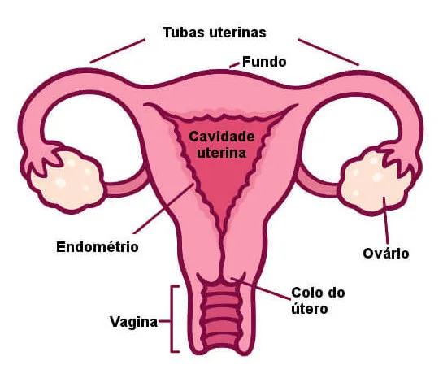

Útero

O útero, é um órgão oco com paredes espessas e está situado entre a bexiga e o reto, é fonte do fluxo menstrual e é o lugar que ocorre o desenvolvimento do feto, quando uma mulher nunca gerou uma criança, ele pode medir de 7,5 cm de comprimento de 5 cm de largura, as paredes uterinas possuem 2,5 cm de espessura, muscular e que durante a gravidez podem aumentar de tamanho.
Falando dos filiados do útero (endométrio), existe o colo uterino, recheado de tecidos fibrosos e é mais firme que o útero, ele fica na região interna da vagina e se comunica com ela por meio de uma pequena cavidade, que em trabalho de parto vai se abrindo (dilatando) para que o bebê possa sair.